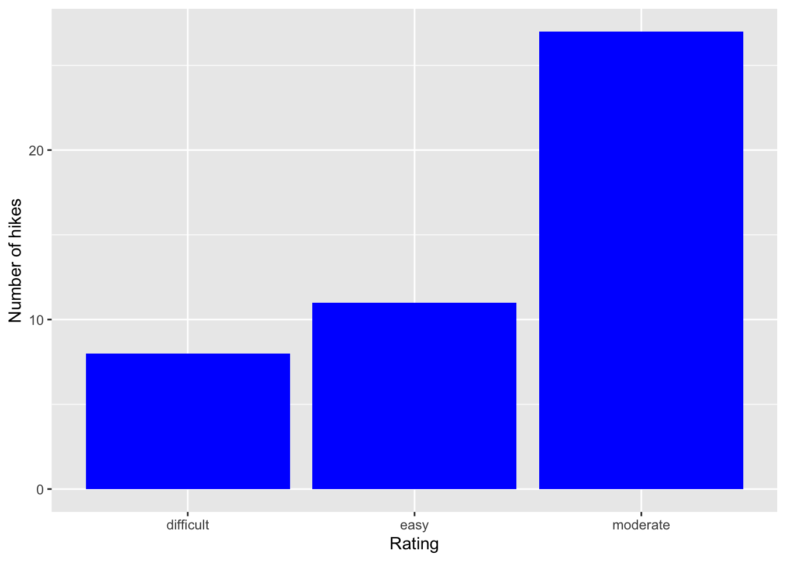

A. What features would we like a visualization of the categorical difficulty rating variable to capture? We may want a histogram to help us understand the relative difficulty of each of the hikes and understand relationships between difficulty and other variables.
B. What about a visualization of the quantitative elevation variable? We would want to see clearly which mountains have higher elevation, and how that variable corresponds to the others, such as difficulty, ascent, etc.
# Use the ggplot functionlibrary(tidyverse)
── Attaching core tidyverse packages ──────────────────────── tidyverse 2.0.0 ──
✔ dplyr 1.1.4 ✔ readr 2.1.5
✔ forcats 1.0.0 ✔ stringr 1.5.1
✔ ggplot2 3.5.1 ✔ tibble 3.2.1
✔ lubridate 1.9.4 ✔ tidyr 1.3.1
✔ purrr 1.0.2
── Conflicts ────────────────────────────────────────── tidyverse_conflicts() ──
✖ dplyr::filter() masks stats::filter()
✖ dplyr::lag() masks stats::lag()
ℹ Use the conflicted package (<http://conflicted.r-lib.org/>) to force all conflicts to become errors
ggplot(hikes, aes(x = rating))
How many hikes fall into each category? 1 easy, 3 are maderate, and 4 are difficult
Are the hikes evenly distributed among these categories, or are some more common than others? Some are more common than others. They all have different frequencies.
What did this do? What do you observe? It created an empty bar graph that categorizes the hikes as difficult, easy, or moderate along the x axis, and the frequency of the hikes in the dataset along the y axis.
What, in general, is the first argument of the ggplot() function? Hikes
What is the purpose of writing x = rating? It clearly communicates what the different categories on the x axis represent.
What do you think aes stands for?!? aesthetic
# COMMENT on the change in the code and the corresponding change in the plot --- It added bars in gray that visually represents the frequency of each of the categories in the data set of hikes. ggplot(hikes, aes(x = rating)) +geom_bar()
# COMMENT on the change in the code and the corresponding change in the plot -- this adds clear labels to the y axis that make the visualization better and easier to understand ggplot(hikes, aes(x = rating)) +geom_bar() +labs(x ="Rating", y ="Number of hikes")
# COMMENT on the change in the code and the corresponding change in the plot --- This changed the color of the bars to blue ggplot(hikes, aes(x = rating)) +geom_bar(fill ="blue") +labs(x ="Rating", y ="Number of hikes")

# COMMENT on the change in the code and the corresponding change in the plot --- this code gave the bars an orange outline (Go Scots!)ggplot(hikes, aes(x = rating)) +geom_bar(color ="orange", fill ="blue") +labs(x ="Rating", y ="Number of hikes")
# COMMENT on the change in the code and the corresponding change in the plot --- this code made the background clearer. ggplot(hikes, aes(x = rating)) +geom_bar(color ="orange", fill ="blue") +labs(x ="Rating", y ="Number of hikes") +theme_minimal()
9.0.1 Part A: Questions
Reflect on the ggplot() code: The code ultimately generated a compelling and clear data visualization. The clear labeling and engaging coloring make this a great visual representation of the frequency and difficulty rating of the hikes in the data set.
What’s the purpose of the +? When do we use it? The + is used to add layers, aesthetics, and other components to a ggplot object. It helps build plots step by step by connecting different commands.
We added the bars using geom_bar()? Why “geom”? The “geom” function creates the clear geometric bars for the graph.
What does labs() stand for? It stands for “labels.”
What’s the difference between color and fill? “Color” is the outline/trimming of the bars in the graph, and “fill” is the color that fills the geometric shape.
9.0.2 Part B: Questions
Observed categories: What categories did we observe? We can see three categories, namely “Easy”, “Moderate”, and “Difficult”
Variability between categories: Are observations evenly spread out among the categories, or are some categories more common than others? No they are not evenly spread out. There are more “moderate” hikes represented in the dataset.
Summarize below what you learned from the bar chart, in context. We learned that there is a significantly higher number of “moderate” hikes in the Adirondacks, compared to less “easy” hikes and even fewere “difficult” hikes. Most of the terrain falls outsides of the extremes of difficulty (easy, difficult).
9.0.3 Part C: Questions
Is there anything you don’t like about this barplot? I would prefer that the order of the categories be more clear. I’d order it (easy, then moderate, and difficult) This would better capture that the most of the hikes fall in the middle of the x-axis, which represents the level of difficulty.
Source Code
---title: "Univariate Viz"---Use this file for practice with the **univariate viz** in-class activity. Refer to the class website for details.```{r}# Exercise 1# Import data hikes <-read.csv("https://mac-stat.github.io/data/high_peaks.csv")head(hikes)```A. What features would we like a visualization of the categorical difficulty rating variable to capture? We may want a histogram to help us understand the relative difficulty of each of the hikes and understand relationships between difficulty and other variables.B. What about a visualization of the quantitative elevation variable? We would want to see clearly which mountains have higher elevation, and how that variable corresponds to the others, such as difficulty, ascent, etc. ```{r}# Use the ggplot functionlibrary(tidyverse)ggplot(hikes, aes(x = rating))```How many hikes fall into each category? 1 easy, 3 are maderate, and 4 are difficult Are the hikes evenly distributed among these categories, or are some more common than others? Some are more common than others. They all have different frequencies. What did this do? What do you observe? It created an empty bar graph that categorizes the hikes as difficult, easy, or moderate along the x axis, and the frequency of the hikes in the dataset along the y axis. What, in general, is the first argument of the ggplot() function? Hikes What is the purpose of writing x = rating? It clearly communicates what the different categories on the x axis represent. What do you think aes stands for?!? aesthetic ```{r}# COMMENT on the change in the code and the corresponding change in the plot --- It added bars in gray that visually represents the frequency of each of the categories in the data set of hikes. ggplot(hikes, aes(x = rating)) +geom_bar()``````{r}# COMMENT on the change in the code and the corresponding change in the plot -- this adds clear labels to the y axis that make the visualization better and easier to understand ggplot(hikes, aes(x = rating)) +geom_bar() +labs(x ="Rating", y ="Number of hikes")``````{r}# COMMENT on the change in the code and the corresponding change in the plot --- This changed the color of the bars to blue ggplot(hikes, aes(x = rating)) +geom_bar(fill ="blue") +labs(x ="Rating", y ="Number of hikes")``````{r}# COMMENT on the change in the code and the corresponding change in the plot --- this code gave the bars an orange outline (Go Scots!)ggplot(hikes, aes(x = rating)) +geom_bar(color ="orange", fill ="blue") +labs(x ="Rating", y ="Number of hikes")``````{r}# COMMENT on the change in the code and the corresponding change in the plot --- this code made the background clearer. ggplot(hikes, aes(x = rating)) +geom_bar(color ="orange", fill ="blue") +labs(x ="Rating", y ="Number of hikes") +theme_minimal()```### Part A: Questions ### Reflect on the ggplot() code: The code ultimately generated a compelling and clear data visualization. The clear labeling and engaging coloring make this a great visual representation of the frequency and difficulty rating of the hikes in the data set. What’s the purpose of the +? When do we use it? The + is used to add layers, aesthetics, and other components to a ggplot object. It helps build plots step by step by connecting different commands.We added the bars using geom_bar()? Why “geom”? The "geom" function creates the clear geometric bars for the graph. What does labs() stand for? It stands for "labels."What’s the difference between color and fill? "Color" is the outline/trimming of the bars in the graph, and "fill" is the color that fills the geometric shape. ### Part B: Questions ###Observed categories: What categories did we observe? We can see three categories, namely "Easy", "Moderate", and "Difficult"Variability between categories: Are observations evenly spread out among the categories, or are some categories more common than others? No they are not evenly spread out. There are more "moderate" hikes represented in the dataset. Summarize below what you learned from the bar chart, in context. We learned that there is a significantly higher number of "moderate" hikes in the Adirondacks, compared to less "easy" hikes and even fewere "difficult" hikes. Most of the terrain falls outsides of the extremes of difficulty (easy, difficult). ### Part C: Questions ### Is there anything you don’t like about this barplot? I would prefer that the order of the categories be more clear. I'd order it (easy, then moderate, and difficult) This would better capture that the most of the hikes fall in the middle of the x-axis, which represents the level of difficulty.